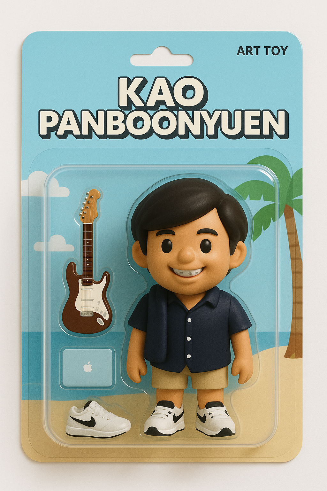
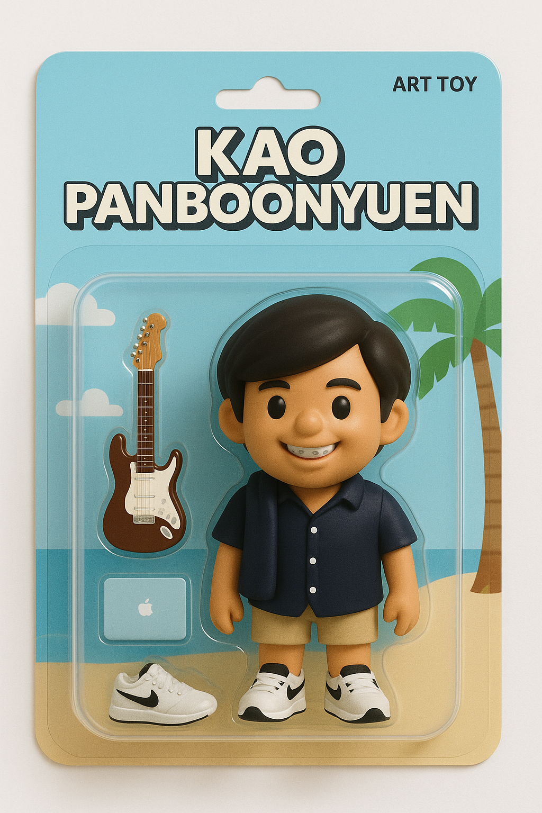

GET TO KNOW ME BETTER
 Teerapong Panboonyuen (Kao), ธีรพงศ์ ปานบุญยืน (เก้า)
Teerapong Panboonyuen (Kao), ธีรพงศ์ ปานบุญยืน (เก้า)
Abstract
Hi guys! I’m Teerapong Panboonyuen, but you can call me Kao. I’m passionate about building AI that drives meaningful impact. Currently, I’m a Senior AI Research Scientist at MARSAIL (Motor AI Recognition Solution Artificial Intelligence Laboratory) and a Postdoctoral Fellow at Chulalongkorn University, where I received my Ph.D. in Computer Engineering, specializing in advanced AI methodologies. My research focuses on pushing the boundaries of AI through transformer architectures, diffusion models, and generative adversarial networks (GANs), with a strong foundation in optimization theory, latent spaces, and stochastic processes. I’m especially drawn to applications in remote sensing and geospatial analysis, where I leverage deep learning techniques like CNNs and RNNs to uncover patterns in complex data. Beyond research, I love teaching machine learning and mentoring students on concepts like gradient descent, regularization, and the inner workings of deep learning frameworks. My mission is to blend rigorous mathematical principles with innovative problem-solving to create AI that tackles real-world challenges. Whether it’s exploring the potential of attention mechanisms in LLMs or enhancing predictive models with statistical optimization, I’m constantly seeking to expand what’s possible in AI. Let’s collaborate to build technology that inspires, solves problems, and makes a lasting difference!
Here’s a glimpse into the person behind the research.
This profile image isn’t just a photo—it’s a reflection of the dedication, curiosity, and commitment I carry into every aspect of my work. Whether I’m deep in code, guiding students, or exploring breakthroughs in AI, I bring the same energy and focus. From the lecture halls of Chula to international conferences, I aim to push technology forward—making it smarter, more human, and truly impactful.
Shout-out to Gemini 2.5 Flash for enhancing the visual quality of these shots, helping them capture the professional tone that represents me best.


This next one is my official profile photo—the one I use on everything from academic credentials to my AI researcher profile. It’s the face I present to the world as I continue growing in both academic and professional spaces.

But here’s another side of me—outside the labs and research. This candid travel photo is completely untouched by AI. No filters, no edits—just me exploring new places and enjoying life. Whether I’m wandering hidden streets in Japan or taking in the quiet beauty of nature, these moments remind me of the balance between ambition and reflection.


PS. Here’s an art toy version of me, created with AI—just for fun. I just wanted to see what I’d look like as a cartoon figure.
 


Beyond the Research
So who am I beyond the algorithms and equations?
I’m a tech enthusiast who believes in the power of innovation to make the world better. When I’m not experimenting with neural networks, you’ll probably find me out on the track or training for a triathlon. Running, marathons, and triathlons keep me grounded—proof that with grit and perseverance, anything is possible.
I’m also a lifelong learner, constantly curious about the latest trends in AI, technology, and science. But learning doesn’t stop at theory—I love sharing knowledge, volunteering, and connecting with communities that inspire growth.
If you’d like to follow along with my journey, check out My WordPress Blog.
And if you ever want to swap stories about the newest gadgets, explore the latest research, or just chat about life, don’t hesitate to reach out at panboonyuen.kao@gmail.com.
Kao Panboonyuen
Teerapong Panboonyuen
My research focuses on leveraging advanced machine intelligence techniques, specifically computer vision, to enhance semantic understanding, learning representations, visual recognition, and geospatial data interpretation.